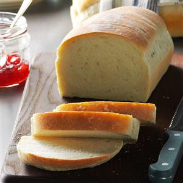

MY RECIPE BOOK
Bread
- Description
- Ingradients
- Directions
- Comments
``
Description
Here's a basic yeast-risen white bread that bakes up deliciously golden brown.
WIKIPEDIA link to White Bread
Ingradients
- 1 package (1/4 ounce) active dry yeast
- 1 package (1/4 ounce) active dry yeast
- 3 tablespoons sugars
- 1 tablespoon salt
- 2 tablespoons canola oils
- 6-1/4 to 6-3/4 cups all-purpose flour
Directions
- In a large bowl, dissolve yeast in warm water.
Add the sugar, salt, oil and 3 cups flour. Beat until smooth.
Stir in enough remaining flour, 1/2 cup at a time, to form a soft dough.
- Turn onto a floured surface; knead until smooth and elastic,
about 8-10 minutes. Place in a greased bowl, turning once to grease the top.
Cover and let rise in a warm place until doubled, about 1-1/2 hours.
- Punch dough down. Turn onto a lightly floured surface; divide dough in half.
Shape each into a loaf. Place in two greased 9x5-in. loaf pans.
Cover and let rise until doubled, about 30-45 minutes.
- Bake at 375° for 30-35 minutes or until golden brown and bread sounds
hollow when tapped. Remove from pans to wire racks to cool.
Yield: 2 loaves (16 slices each).
Comments
Nutritional Facts
1 slice: 102 calories, 1g fat (0 saturated fat), 0 cholesterol, 222mg sodium,
20g carbohydrate (1g sugars, 1g fiber), 3g protein.